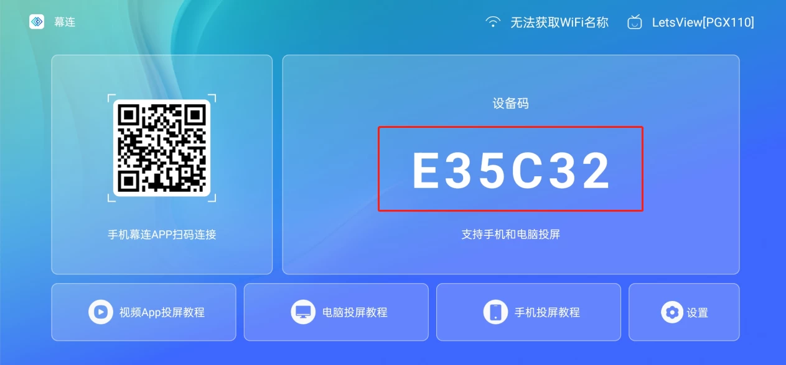

LetsView 怎么用？五分钟从装到投完全上手
第一次接触无线投屏的小白看这篇就够了——从下载安装到手机画面投上电脑大屏，再到截图、白板、设备码这几个最常用的功能，一步步带你跑通。
这篇能带你从完全不懂无线投屏到真正用起来，不需要任何基础——跟着做就行。
它到底是干嘛的？
LetsView 就是一款跨平台无线投屏工具，你可以把它想成一根看不见的 HDMI 线：手机、电脑、电视之间不用插线，同一个 Wi-Fi 底下就能把一端的画面实时送到另一端。
市面上投屏工具不少，但 LetsView 的特点是真跨平台——Windows、macOS、iOS、Android、电视端都有，而且免费版就够用，不用看广告也没会员门槛，这一点对新手特别友好。
五分钟上手：从装到投跑通第一次
先说最重要的一条：两端必须连同一个 Wi-Fi。电视用网线接在同一路由器下也算，官方 FAQ 确认过的，别担心这个。
第一步，装软件。手机端去 App Store 或应用商店搜「幕连」，电脑端去 LetsView 官网 下载安装包，双击一路下一步就行——Windows 版装完如果一打开就闪退，别慌，大概率是系统缺了 .NET Framework 4.7 以上的运行库，装一下就好，后面还会细说。
第二步，打开两端的 LetsView。电脑端会自动扫出同一 Wi-Fi 下的手机设备，手机端也能看到电脑的名字，点一下就投上了——这是最简单的「搜索设备」连接法。

如果搜不到设备，还有两条路：扫码（电脑端点「扫码连接」出二维码，手机端扫一下）和设备码（电脑端点「设备码连接」显示一串数字，手机端输进去）。三条路等价，哪条通用哪条。

跑通之后，手机画面实时出现在电脑上，恭喜你，第一次投屏成功了——从下载到现在，应该不到五分钟。
上手后先玩这三个功能
投上去只是开始，这三个小功能是新手最值得先碰的：
第一个：截图，一键存进电脑。鼠标移到投屏窗口顶部，有个截图图标，点一下，手机当前画面直接保存在电脑里。你会发现省掉了「手机截图 → 微信传文件 → 电脑另存」这三步，App 内的界面、聊天记录、报错弹窗要取材，投上电脑批量截就是。
第二个：白板涂鸦。还是投屏窗口顶部，最左边有个画笔按钮，点进去就是白板模式——支持六种颜色、画笔、删除、撤销，边投屏边标注讲重点，板书即讲义。涂鸦时画面照常实时更新，不会卡住。
第三个：电脑投电视，用设备码。如果想把电脑画面投到客厅电视上，打开电视端 LetsView，首页显示一个 6 位设备码，电脑端打开 LetsView 选「屏幕镜像」→「设备码连接」，填进去点共享就行。声音也能同步过去，开个 PPT 会议演示、播个视频都够用。免费档是 30fps、4M 码率，投静态内容完全不卡，播视频觉得流畅度不够时再考虑升级也不迟。画面模式切换、声音同步这些进阶设置，需要时去翻翻 LetsView 文档 就好。
小白的三个常见疑问
疑问一：为什么投不上？
八成是网络不在同一个网段。先确认两端的 IP 前三段是否一致（比如电脑 192.168.1.xx，手机 192.168.1.xx 就行），不一样的话把其中一端切换网络，或者重启路由器。Windows 防火墙如果把 LetsView 拦了，也会搜不到设备，检查一下放行状态。
疑问二：画面有黑边或者变形？
电脑投电视时最容易遇到。切换一下画面模式就行：LetsView 提供了最佳画质、平铺、AI 满屏三种模式，最佳画质会保持原比例可能出现黑边，平铺拉伸填满，AI 满屏会智能裁剪，按需选一个顺眼的。
疑问三：录屏和截图有什么区别？
截图是「这一帧」，点一下存一张图片；录屏是「这一段」，点顶部录制按钮开始，再点一次结束，保存成视频。横竖屏切换时录屏会自动暂停一下，等画面稳定再继续，这个小细节知道就好。
写在最后
无线投屏这件事，上手真的没门槛——装软件、连同一个 Wi-Fi、点一下或输个设备码，三分钟就能跑通。真正值得花时间的是后面的细节：截图自动存电脑、白板涂鸦标注、电脑投电视开会议……这些小功能积累起来，日常工作和娱乐都能省不少事。
刚开始用不用急着全功能都摸一遍，先把手机投电脑跑通，截几张图试试，再慢慢解锁电视端和电脑互投——进阶方向的话，试试把两台电脑互投，一边做 PPT 一边在另一台电脑的投屏窗口上标注讲解，会议效率会高很多。
幕连这套资料我分别存了三份，GitHub、Gitee、GitCode 都能拿到，文档内容完全同步，国内访问选 Gitee 或 GitCode 更顺畅一些。